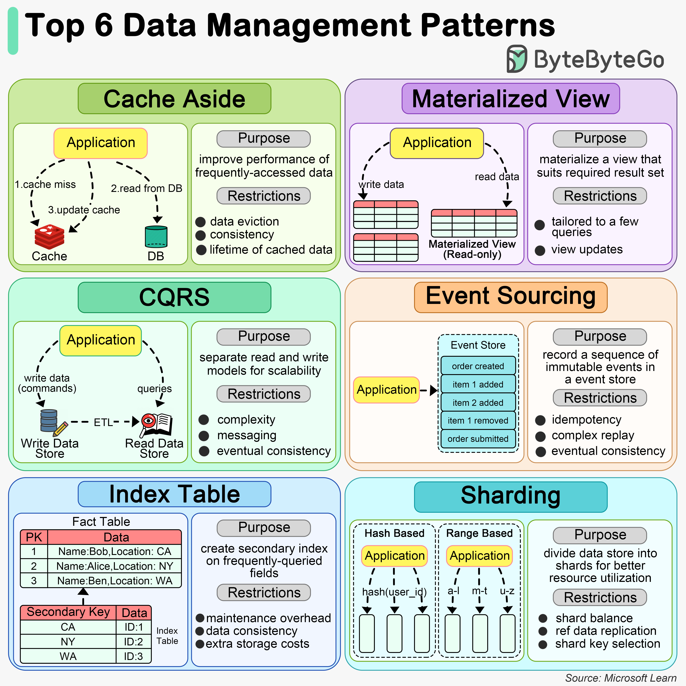

When an application needs to access data, it first checks the cache. If the data is not present (a cache miss), it fetches the data from the data store, stores it in the cache, and then returns the data to the user. This pattern is particularly useful for scenarios where data is read frequently but updated less often.
A Materialized View is a database object that contains the results of a query. It is physically stored, meaning the data is actually computed and stored on disk, as opposed to being dynamically generated upon each request. This can significantly speed up query times for complex calculations or aggregations that would otherwise need to be computed on the fly. Materialized views are especially beneficial in data warehousing and business intelligence scenarios where query performance is critical.
CQRS is an architectural pattern that separates the models for reading and writing data. This means that the data structures used for querying data (reads) are separated from the structures used for updating data (writes). This separation allows for optimization of each operation independently, improving performance, scalability, and security. CQRS can be particularly useful in complex systems where the read and write operations have very different requirements.
Event Sourcing is a pattern where changes to the application state are stored as a sequence of events. Instead of storing just the current state of data in a domain, Event Sourcing stores a log of all the changes (events) that have occurred over time. This allows the application to reconstruct past states and provides an audit trail of changes. Event Sourcing is beneficial in scenarios requiring complex business transactions, auditability, and the ability to rollback or replay events.
The Index Table pattern involves creating additional tables in a database that are optimized for specific query operations. These tables act as secondary indexes and are designed to speed up the retrieval of data without requiring a full scan of the primary data store. Index tables are particularly useful in scenarios with large datasets and where certain queries are performed frequently.
Sharding is a data partitioning pattern where data is divided into smaller, more manageable pieces, or “shards”, each of which can be stored on different database servers. This pattern is used to distribute the data across multiple machines to improve scalability and performance. Sharding is particularly effective in high-volume applications, as it allows for horizontal scaling, spreading the load across multiple servers to handle more users and transactions.